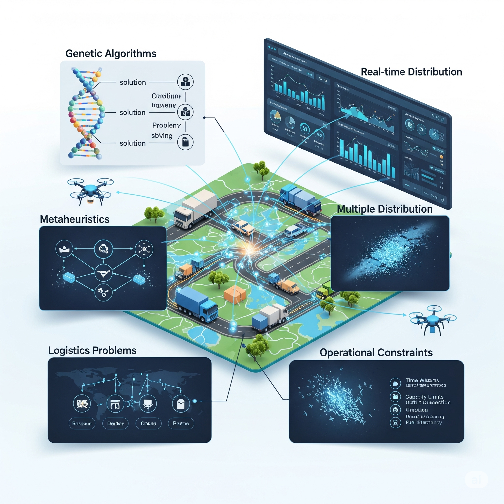

Proyectos de investigación

Zonificación Agrícola
Desarrollo de modelos de programación entera mixta no lineal para la optimización de zonas de manejo específico por sitio, mejorando la eficiencia en la producción agrícola mediante técnicas avanzadas de investigación de operaciones.

Problemas de Ruteo
Investigación en optimización de rutas vehiculares aplicando algoritmos genéticos y metaheurísticas para resolver problemas complejos de distribución y logística en tiempo real con múltiples restricciones operacionales.

Movilidad Sustentable
Modelos y algoritmos de optimización para sistemas de transporte urbano sustentable, enfocados en la reducción de emisiones y optimización energética como parte del Pronaces "Energía y cambio climático".